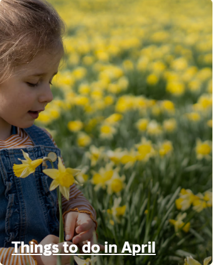

As winter snows melt away, Norway bursts to life with vibrant colours, the scent of cherry blossoms, surging waterfalls, and sun-hungry Norwegians enjoying the outdoors. Embark on picturesque hikes through lush forests, explore quaint villages, and see newborn lambs in the meadows. Norway's springtime beauty promises the rejuvenation and renewal we all need after a long winter. Book your getaway now and get ready to be enchanted by the wonders of spring in Norway!
